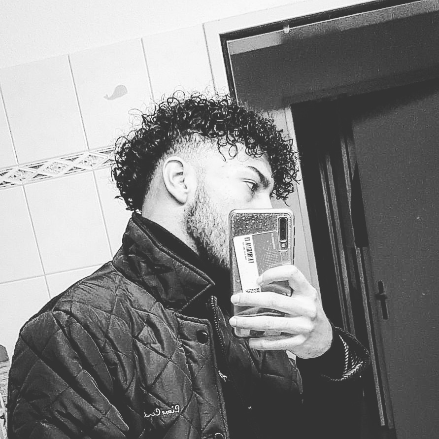
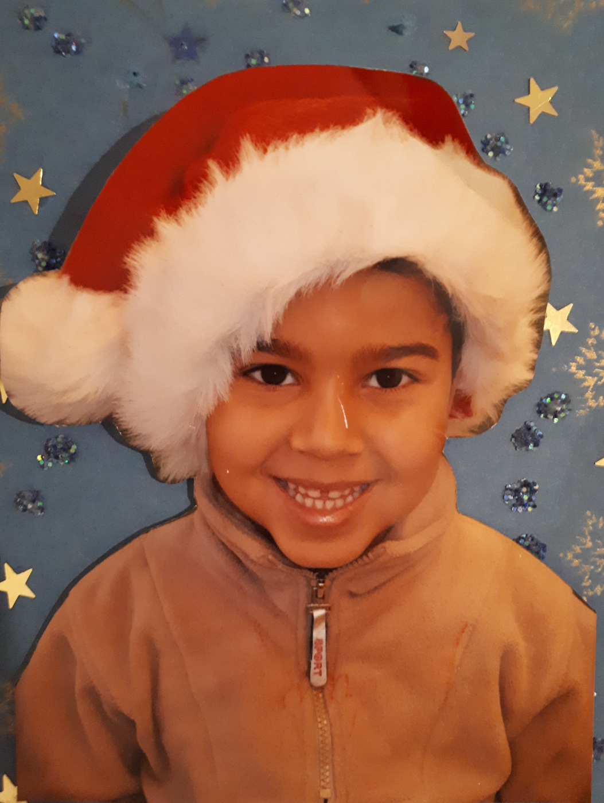

Home


Name: Karim Manai
Geburtstag: 23.03.2002
Wohnort: Birr
Adresse: Quellenstrasse 6
Hobbys: Fussball, Musik, Haare schneiden, Informatik
Ausbildung: Momentan, 1. IMS (Kanti Baden)
Auf dieser Webseite werde ich euch meine 3 Lieblingshobbys vorstellen. Am liebsten schneide ich Haare an anderen Leuten. Ich arbeite zur Zeit bei einem Coiffeur in Birr und verdiene so mein Taschengeld. Musik mache ich sehr gerne und habe auch Kontakt zu einigen bekannten Künstler hier in der Schweiz und in Tunesien. Ich habe zusammen mit 2 Freunden ein Musikstudio in Brugg. Fussball war eine Zeit lang mein gesamtes Leben. Mein Leben drehte sich nur noch um den Ball. Wegen der Schule musste ich mein Traum als Profifussballer leider aufgeben, da ich beim FCZ 4 Mal Training hatte in der Woche und es mit der Schule sonst nicht mehr aufging. Es war eine schwere Entscheidung doch ich hatte mich für mein Studiengang entschieden. Auch wenn ich es ab und zu bereue.
Quellen:
W3Schools.